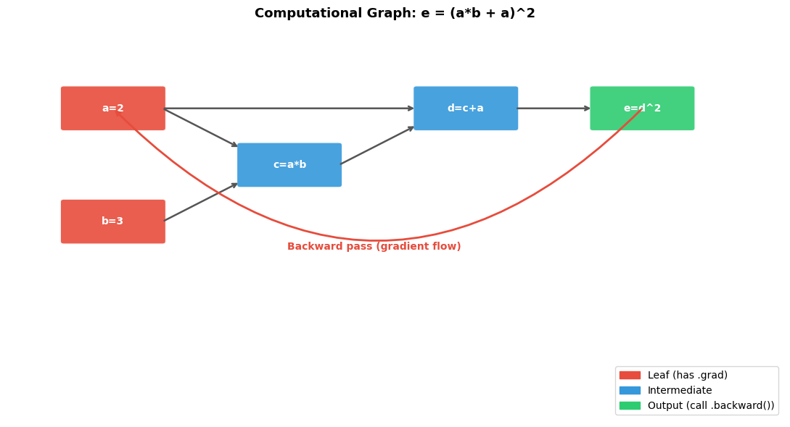
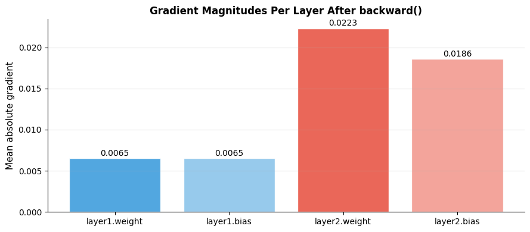
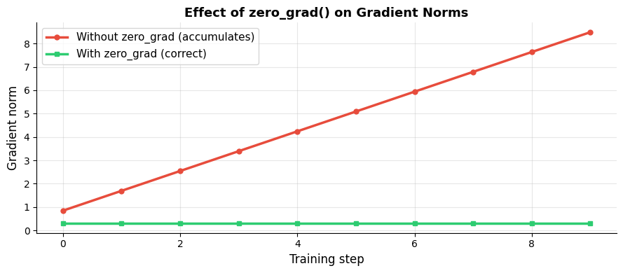
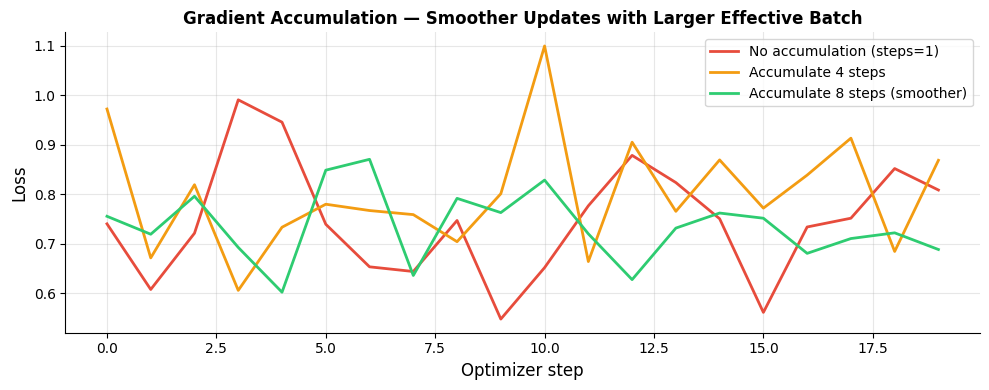

How does PyTorch compute gradients?#
Topics: requires_grad · Computational Graph · loss.backward() · zero_grad() · detach() · no_grad() · Gradient Accumulation
1. requires_grad & Computational Graph#
What it is#
requires_grad=Truetells PyTorch to track operations on this tensor for gradient computationEvery operation builds a computational graph — a record of how tensors were computed
Calling
.backward()traverses this graph in reverse to compute gradients
Key intuition#
Think of the computational graph as a recipe — PyTorch records every step
Backprop follows the recipe in reverse, applying the chain rule at each step
Leaf tensors (inputs, weights) accumulate gradients in
.grad
When to use#
Model parameters always have
requires_grad=TrueautomaticallyInput data usually does NOT need
requires_grad— only weights do
Gotchas#
Gradients accumulate — always call
zero_grad()before each backward passOnly leaf tensors have
.grad— intermediate tensors don’t by default
import torch
import matplotlib.pyplot as plt
import matplotlib.patches as mpatches
# Simple example: y = x^2 + 2x + 1
x = torch.tensor(3.0, requires_grad=True)
y = x**2 + 2*x + 1
print(f"x = {x.item()}")
print(f"y = x^2 + 2x + 1 = {y.item()}")
y.backward()
print(f"dy/dx = 2x + 2 = {x.grad.item()} (expected {2*3 + 2})")
# Multi-variable graph
a = torch.tensor(2.0, requires_grad=True)
b = torch.tensor(3.0, requires_grad=True)
c = a * b
d = c + a
e = d ** 2
e.backward()
print(f"a.grad = de/da = {a.grad.item()}")
print(f"b.grad = de/db = {b.grad.item()}")
# Visualize computational graph as diagram
fig, ax = plt.subplots(figsize=(11, 6))
ax.set_xlim(0, 11); ax.set_ylim(0, 7); ax.axis('off')
ax.set_title('Computational Graph: e = (a*b + a)^2', fontsize=13, fontweight='bold')
def node(ax, x, y, label, color):
rect = mpatches.FancyBboxPatch((x-0.7, y-0.35), 1.4, 0.7,
boxstyle='round,pad=0.05', facecolor=color, edgecolor='white', linewidth=1.5, alpha=0.9)
ax.add_patch(rect)
ax.text(x, y, label, ha='center', va='center', fontsize=10, fontweight='bold', color='white')
def arrow(ax, x1, y1, x2, y2):
ax.annotate('', xy=(x2, y2), xytext=(x1, y1),
arrowprops=dict(arrowstyle='->', color='#555555', lw=1.8))
node(ax, 1.5, 5.5, 'a=2', '#E74C3C')
node(ax, 1.5, 3.5, 'b=3', '#E74C3C')
node(ax, 4.0, 4.5, 'c=a*b', '#3498DB')
node(ax, 6.5, 5.5, 'd=c+a', '#3498DB')
node(ax, 9.0, 5.5, 'e=d^2', '#2ECC71')
arrow(ax, 2.2, 5.5, 3.3, 4.8)
arrow(ax, 2.2, 3.5, 3.3, 4.2)
arrow(ax, 4.7, 4.5, 5.8, 5.2)
arrow(ax, 2.2, 5.5, 5.8, 5.5)
arrow(ax, 7.2, 5.5, 8.3, 5.5)
ax.annotate('', xy=(1.5, 5.5), xytext=(9.0, 5.5),
arrowprops=dict(arrowstyle='->', color='#E74C3C', lw=2,
connectionstyle='arc3,rad=-0.5'))
ax.text(5.2, 3.0, 'Backward pass (gradient flow)', ha='center', fontsize=10, color='#E74C3C', fontweight='bold')
legend = [mpatches.Patch(color='#E74C3C', label='Leaf (has .grad)'),
mpatches.Patch(color='#3498DB', label='Intermediate'),
mpatches.Patch(color='#2ECC71', label='Output (call .backward())')]
ax.legend(handles=legend, loc='lower right', fontsize=10)
plt.tight_layout()
plt.savefig('computational_graph.png', dpi=120, bbox_inches='tight')
plt.show()
x = 3.0
y = x^2 + 2x + 1 = 16.0
dy/dx = 2x + 2 = 8.0 (expected 8)
a.grad = de/da = 64.0
b.grad = de/db = 32.0

2. loss.backward() & Gradient Flow#
What it is#
.backward()computes gradients of the loss with respect to all leaf tensors withrequires_grad=TrueGradients are stored in
.gradattribute of each leaf tensorUses reverse-mode automatic differentiation (backpropagation)
Key intuition#
One call to
.backward()fills in.gradfor every parameterThe gradient tells us: increase this weight → loss goes up or down by this much
Interview Q&A#
What happens if you call .backward() twice without zeroing gradients?
Gradients accumulate (add) — second backward adds to first
This is usually a bug, but intentionally used in gradient accumulation
What is retain_graph=True?
By default, the graph is freed after
.backward()to save memoryretain_graph=Truekeeps it — needed when calling.backward()multiple times on same graph
import torch
import matplotlib.pyplot as plt
# Demonstrate gradient accumulation problem
w = torch.tensor(2.0, requires_grad=True)
# Correct: zero grad before each backward
losses = []
for i in range(5):
loss = (w - 5.0)**2
losses.append(loss.item())
w.grad = None # zero_grad equivalent for single tensor
loss.backward()
print(f"Step {i}: loss={loss.item():.3f}, grad={w.grad.item():.3f}")
with torch.no_grad():
w -= 0.1 * w.grad
# Show gradient values across a simple network
torch.manual_seed(42)
X = torch.randn(32, 8)
y = torch.randint(0, 2, (32,)).float()
layer1 = torch.nn.Linear(8, 16)
layer2 = torch.nn.Linear(16, 1)
out = torch.sigmoid(layer2(torch.relu(layer1(X))))
loss = torch.nn.functional.binary_cross_entropy(out.squeeze(), y)
loss.backward()
# Plot gradient magnitudes per layer
grad_norms = {
'layer1.weight': layer1.weight.grad.abs().mean().item(),
'layer1.bias' : layer1.bias.grad.abs().mean().item(),
'layer2.weight': layer2.weight.grad.abs().mean().item(),
'layer2.bias' : layer2.bias.grad.abs().mean().item(),
}
fig, ax = plt.subplots(figsize=(9, 4))
colors = ['#3498DB', '#85C1E9', '#E74C3C', '#F1948A']
bars = ax.bar(grad_norms.keys(), grad_norms.values(), color=colors, alpha=0.85, edgecolor='white')
ax.set_ylabel('Mean absolute gradient', fontsize=11)
ax.set_title('Gradient Magnitudes Per Layer After backward()', fontsize=12, fontweight='bold')
ax.grid(True, alpha=0.3, axis='y')
ax.spines['top'].set_visible(False)
ax.spines['right'].set_visible(False)
for bar, val in zip(bars, grad_norms.values()):
ax.text(bar.get_x() + bar.get_width()/2, bar.get_height() + 0.0001,
f'{val:.4f}', ha='center', va='bottom', fontsize=10)
plt.tight_layout()
plt.savefig('gradient_magnitudes.png', dpi=120, bbox_inches='tight')
plt.show()
Step 0: loss=9.000, grad=-6.000
Step 1: loss=5.760, grad=-4.800
Step 2: loss=3.686, grad=-3.840
Step 3: loss=2.359, grad=-3.072
Step 4: loss=1.510, grad=-2.458

3. zero_grad(), detach(), no_grad()#
What it is#
optimizer.zero_grad()— clears accumulated gradients before each backward pass.detach()— creates a tensor that shares data but is excluded from the graphtorch.no_grad()— context manager that disables gradient tracking entirely
When to use#
zero_grad()— every training step, beforeloss.backward()detach()— when passing a tensor to a loss but don’t want gradients flowing backno_grad()— validation, inference, any forward pass where you don’t need gradients
Key intuition#
no_grad()saves memory and speeds up inference — no graph is builtdetach()is like cutting a wire in the graph — gradients stop there
Gotchas#
Forgetting
zero_grad()→ gradients accumulate → weights update incorrectlyForgetting
no_grad()during validation → unnecessary memory usagemodel.eval()is NOT the same asno_grad()— do both during inference
import torch
import torch.nn as nn
import matplotlib.pyplot as plt
torch.manual_seed(42)
model = nn.Linear(4, 2)
optimizer = torch.optim.SGD(model.parameters(), lr=0.01)
X = torch.randn(8, 4)
y = torch.randint(0, 2, (8,))
# Demonstrate zero_grad importance
print("=== Without zero_grad (WRONG) ===")
for step in range(3):
out = model(X)
loss = nn.CrossEntropyLoss()(out, y)
loss.backward()
grad_norm = model.weight.grad.norm().item()
print(f"Step {step}: grad norm = {grad_norm:.4f} (keeps growing!)")
print("=== With zero_grad (CORRECT) ===")
for step in range(3):
optimizer.zero_grad()
out = model(X)
loss = nn.CrossEntropyLoss()(out, y)
loss.backward()
grad_norm = model.weight.grad.norm().item()
print(f"Step {step}: grad norm = {grad_norm:.4f} (consistent)")
# no_grad for inference
print("=== no_grad for inference ===")
model.eval()
with torch.no_grad():
out = model(X)
print(f"Output requires_grad: {out.requires_grad}") # False
# detach use case — stop gradient flow
h = torch.randn(4, 8, requires_grad=True)
h_detached = h.detach()
loss2 = (h_detached * 2).sum()
# loss2.backward() would not affect h
# Visualize: gradient norm with vs without zero_grad
no_zero, with_zero = [], []
model2 = nn.Linear(4, 2)
opt2 = torch.optim.SGD(model2.parameters(), lr=0.01)
for _ in range(10):
out = model2(X); loss = nn.CrossEntropyLoss()(out, y); loss.backward()
no_zero.append(model2.weight.grad.norm().item())
model2 = nn.Linear(4, 2)
opt3 = torch.optim.SGD(model2.parameters(), lr=0.01)
for _ in range(10):
opt3.zero_grad()
out = model2(X); loss = nn.CrossEntropyLoss()(out, y); loss.backward()
with_zero.append(model2.weight.grad.norm().item())
fig, ax = plt.subplots(figsize=(9, 4))
ax.plot(no_zero, color='#E74C3C', linewidth=2.5, marker='o', markersize=5, label='Without zero_grad (accumulates)')
ax.plot(with_zero, color='#2ECC71', linewidth=2.5, marker='s', markersize=5, label='With zero_grad (correct)')
ax.set_xlabel('Training step', fontsize=12)
ax.set_ylabel('Gradient norm', fontsize=12)
ax.set_title('Effect of zero_grad() on Gradient Norms', fontsize=13, fontweight='bold')
ax.legend(fontsize=11)
ax.grid(True, alpha=0.3)
ax.spines['top'].set_visible(False)
ax.spines['right'].set_visible(False)
plt.tight_layout()
plt.savefig('zero_grad_effect.png', dpi=120, bbox_inches='tight')
plt.show()
=== Without zero_grad (WRONG) ===
Step 0: grad norm = 0.9966 (keeps growing!)
Step 1: grad norm = 1.9933 (keeps growing!)
Step 2: grad norm = 2.9899 (keeps growing!)
=== With zero_grad (CORRECT) ===
Step 0: grad norm = 0.9966 (consistent)
Step 1: grad norm = 0.9966 (consistent)
Step 2: grad norm = 0.9966 (consistent)
=== no_grad for inference ===
Output requires_grad: False

4. Gradient Accumulation#
What it is#
Simulate a larger batch size by accumulating gradients over multiple small batches before stepping
Useful when GPU memory is too small for the desired batch size
Key intuition#
Instead of batch_size=256 in one step, do 8 steps of batch_size=32
Gradients add up across steps — equivalent to one large batch
Only call
optimizer.step()andzero_grad()after N accumulation steps
When to use#
Training large models (LLMs, ViT) where full batch doesn’t fit in GPU memory
Standard practice in NLP fine-tuning
Gotchas#
Divide loss by accumulation steps — otherwise gradients are N× too large
Don’t call
zero_grad()inside the accumulation loop — only after N steps
import torch
import torch.nn as nn
import matplotlib.pyplot as plt
torch.manual_seed(42)
def train_with_accumulation(accumulation_steps, n_steps=20):
model = nn.Linear(8, 2)
optimizer = torch.optim.SGD(model.parameters(), lr=0.01)
losses = []
optimizer.zero_grad()
for step in range(n_steps * accumulation_steps):
X = torch.randn(16, 8)
y = torch.randint(0, 2, (16,))
out = model(X)
loss = nn.CrossEntropyLoss()(out, y) / accumulation_steps # scale loss
loss.backward()
if (step + 1) % accumulation_steps == 0:
optimizer.step()
optimizer.zero_grad()
losses.append(loss.item() * accumulation_steps)
return losses
losses_1 = train_with_accumulation(accumulation_steps=1)
losses_4 = train_with_accumulation(accumulation_steps=4)
losses_8 = train_with_accumulation(accumulation_steps=8)
fig, ax = plt.subplots(figsize=(10, 4))
ax.plot(losses_1, color='#E74C3C', linewidth=2, label='No accumulation (steps=1)')
ax.plot(losses_4, color='#F39C12', linewidth=2, label='Accumulate 4 steps')
ax.plot(losses_8, color='#2ECC71', linewidth=2, label='Accumulate 8 steps (smoother)')
ax.set_xlabel('Optimizer step', fontsize=12)
ax.set_ylabel('Loss', fontsize=12)
ax.set_title('Gradient Accumulation — Smoother Updates with Larger Effective Batch', fontsize=12, fontweight='bold')
ax.legend(fontsize=10)
ax.grid(True, alpha=0.3)
ax.spines['top'].set_visible(False)
ax.spines['right'].set_visible(False)
plt.tight_layout()
plt.savefig('gradient_accumulation.png', dpi=120, bbox_inches='tight')
plt.show()
print("Pattern:")
print(" optimizer.zero_grad()")
print(" for step, (X, y) in enumerate(loader):")
print(" loss = criterion(model(X), y) / accumulation_steps")
print(" loss.backward()")
print(" if (step+1) % accumulation_steps == 0:")
print(" optimizer.step()")
print(" optimizer.zero_grad()")

Pattern:
optimizer.zero_grad()
for step, (X, y) in enumerate(loader):
loss = criterion(model(X), y) / accumulation_steps
loss.backward()
if (step+1) % accumulation_steps == 0:
optimizer.step()
optimizer.zero_grad()
Interview Q&A#
Why divide loss by accumulation_steps?
Each small batch contributes a gradient — without scaling, the effective gradient is N× larger than a true large batch
Dividing normalizes so the update is equivalent to one large batch
What is mixed precision training?
Use
float16for forward pass (faster, less memory),float32for gradient accumulation (more precise)PyTorch:
torch.cuda.amp.autocast()+GradScalerScales loss to prevent underflow in float16 gradients
Gotchas#
Batch norm statistics are computed per mini-batch — gradient accumulation doesn’t make BN see a bigger batch
Learning rate may need adjustment when changing effective batch size